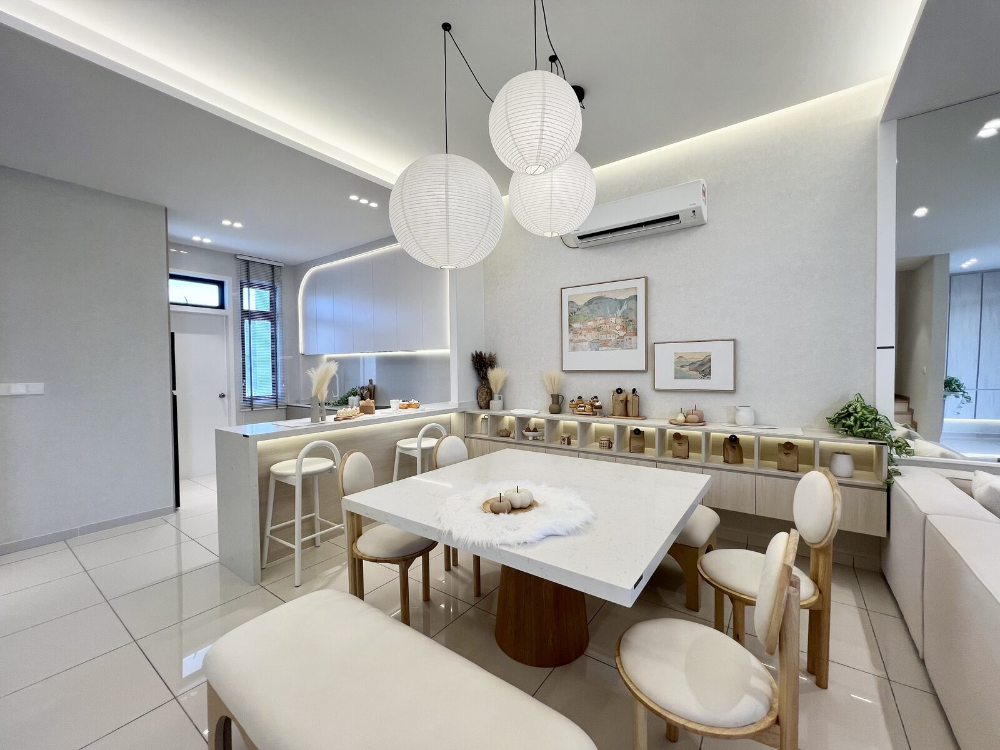
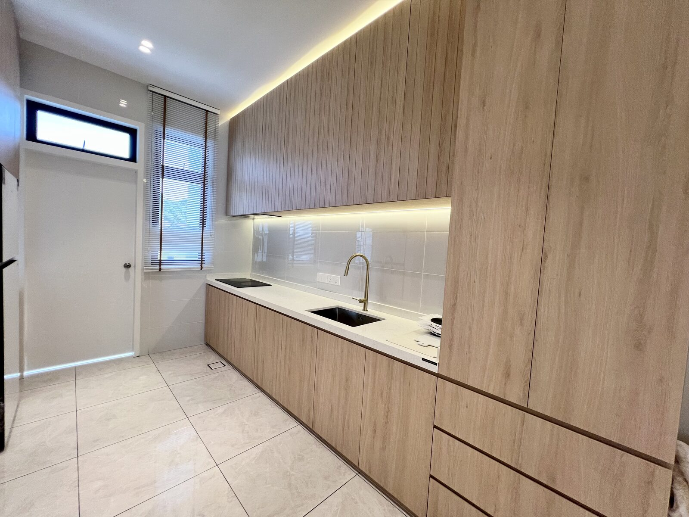
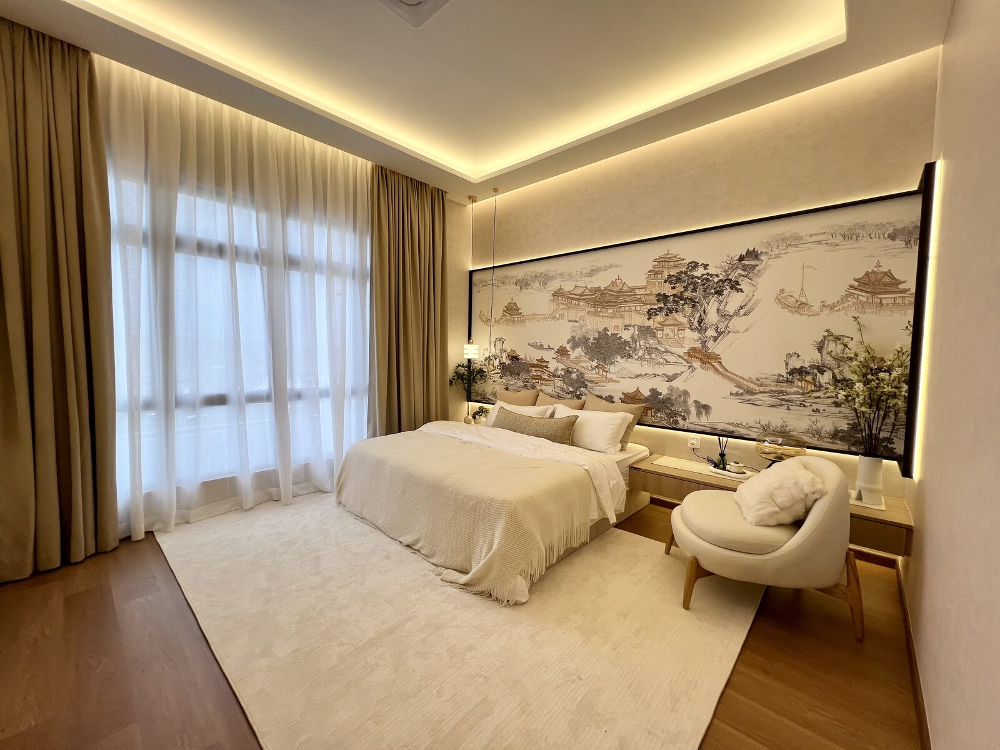

Ascent Park is a new freehold landed project in Bandar Wawari, Iskandar Puteri. Its 25-foot-wide terrace homes give buyers a different layout from the common 22' x 70' terrace house found around Johor Bahru.
This review looks beyond the show unit. I will explain the current price range, location, home choices, strengths and trade-offs, and the type of buyer I think should consider the project.
Ascent Park at a Glance
Project and approval details were checked against the latest available official information. Buyer eligibility is based on the current sales information confirmed to Sam Tee. Prices and eligibility can change, so buyers should check the latest unit list and sale documents.
What Is Ascent Park?
Ascent Park is part of the wider Bandar Wawari growth area in western Iskandar Puteri. LINBAQ's official plan covers about 196.26 acres across Ascent Park I, II and III. Ascent Park I launched in 2025, while later phases continue the township story.
This matters because buyers are not only choosing a house. They are also choosing an area that is still being built. The future neighbourhood may gain more homes, shops and activity, but the present-day environment will not feel as mature as Horizon Hills, Bukit Indah or Eco Botanic.

Current Ascent Park Price
The official project page currently publishes a minimum price of RM1,122,000 for one two-storey residential release. Another release lists two-storey homes from RM1,155,000, while three-storey homes start from RM1,540,000.
These are official approved price ranges, not a promise that the lowest-priced unit is still available. The final price depends on the home type, land size, position, facing, extra land and current unit release.
For a buyer comparing Ascent Park with the Iskandar Puteri resale market, the real question is not only whether RM1.1 million is cheap or expensive. You should compare what you receive:
- a brand-new home with a 25-foot frontage;
- a freehold landed address in a new growth area;
- the waiting time until completion;
- the time needed for the wider neighbourhood to mature; and
- resale alternatives in Horizon Hills, Nusa Idaman and nearby established areas.
The Main Layout Difference: A 25-Foot Frontage
Many standard Johor Bahru terrace houses use a 22' x 70' land format. Ascent Park's 25' x 60' option changes the shape: it is three feet wider but ten feet shorter.
The wider frontage can make the living and dining areas feel more open. It may also give the facade a stronger presence. However, the shorter land depth means buyers should pay attention to the car porch, kitchen, yard and the distance between each part of the house.
| 25' x 60' Ascent Park format | Traditional 22' x 70' format |
|---|---|
| Wider frontage and a broader interior feel | Narrower frontage but more land depth |
| Can create a more open living and dining layout | Often creates a longer living-to-kitchen arrangement |
| Shorter front-to-back distance | More depth for rooms, yard or internal circulation |
| May suit buyers who dislike a long, narrow house | May suit buyers who value a deeper lot |
I will cover the floor plan room by room in a separate layout review. A land dimension alone cannot tell us whether a home works well. Window position, staircase placement, room width, yard space and furniture arrangement all matter.

Location: The Strength Is Also the Trade-Off
Ascent Park is in Bandar Wawari, within the newer development corridor of Iskandar Puteri. The official sales gallery address is Jalan Marlborough. The project is close to the international education corridor and within driving distance of mature areas such as Horizon Hills, Bukit Indah and Eco Botanic.
The location can make sense for families whose daily life is around Iskandar Puteri, EduCity, Medini, Puteri Harbour or the Second Link corridor. A car is still important. Buyers should test their actual school and work journey during normal travel hours instead of relying only on a map.
The trade-off is maturity. Buyers should not expect the same number of completed shops, restaurants and services that they can already find in Bukit Indah or Eco Botanic. Ascent Park is a purchase into a developing area, not a fully completed lifestyle today.
Ascent Park Pros and Cons
| Potential strengths | Points to consider |
|---|---|
| Freehold landed property in Iskandar Puteri | The surrounding township is still developing |
| 25-foot frontage provides a less common wide layout | A 25' x 60' lot has less depth than a 22' x 70' lot |
| New home with modern planning and presentation | Show unit renovation is not the actual delivery standard |
| Near the international education and western Iskandar Puteri corridor | Daily life remains car-dependent |
| Part of a larger multi-phase development | Future growth and price appreciation are not guaranteed |
| Several home formats for different family needs | The current release is not available to foreign buyers |

Who Should Consider Ascent Park?
In my view, Ascent Park deserves consideration if you:
- are a Malaysian buyer looking for a new landed home in Iskandar Puteri;
- prefer a wider living area instead of a long and narrow terrace layout;
- have a budget around RM1.1 million or above;
- plan to live around the Iskandar Puteri or Second Link corridor; and
- are comfortable waiting for a new township to mature.
Who May Be Better Buying Elsewhere?
It may not be the right match if you:
- are a foreign buyer, because the current release is not open to foreigners;
- need shops and daily services within walking distance immediately;
- want a completed home that you can move into now;
- need proven rental demand from the first day; or
- are buying only because you expect a quick increase in price.
Sam's Honest View
Ascent Park's strongest feature is not a guaranteed investment return. It is the combination of a wide 25-foot frontage, a new home and a position inside the growing Bandar Wawari area.
The main decision is whether you prefer a new house in a developing location or an older house in an established township. At a similar budget, a resale home may give you mature shops and a clearer neighbourhood today. Ascent Park gives you a newer product and a different layout, but you must accept the waiting period.
For a family planning to stay long term around Iskandar Puteri, it can be worth comparing. For a short-term investor or a buyer who needs immediate convenience, I would be more careful.
Frequently Asked Questions
What is Ascent Park?
Ascent Park is a freehold mixed development in Bandar Wawari, Iskandar Puteri. It includes landed residential and commercial components across several planned phases.
Can foreigners buy Ascent Park?
No. The current Ascent Park residential release is not available to foreign buyers. This condition should be checked again for any future release before a booking is made.
Is Ascent Park freehold?
Yes. The official project information describes the residential development as freehold. Buyers should still check the exact title and sale documents for their selected unit.
What is the current Ascent Park price?
The official project page currently lists one two-storey release from RM1,122,000 and another from RM1,155,000. Actual available units can cost more depending on type, lot position, facing and extra land.
Is a 25' x 60' home too short?
Not automatically. It is shorter than a 22' x 70' lot but also wider. Buyers who like an open living and dining area may prefer it. Buyers who need a deeper yard or longer internal layout may prefer 22' x 70' or Ascent Park's larger 25' x 70' option.
Is Ascent Park a good investment?
It has factors that may support long-term demand, including a new landed product, the international education corridor and the wider development of Bandar Wawari. However, rental demand and capital appreciation are not guaranteed. It makes more sense when the home also fits your own long-term use.